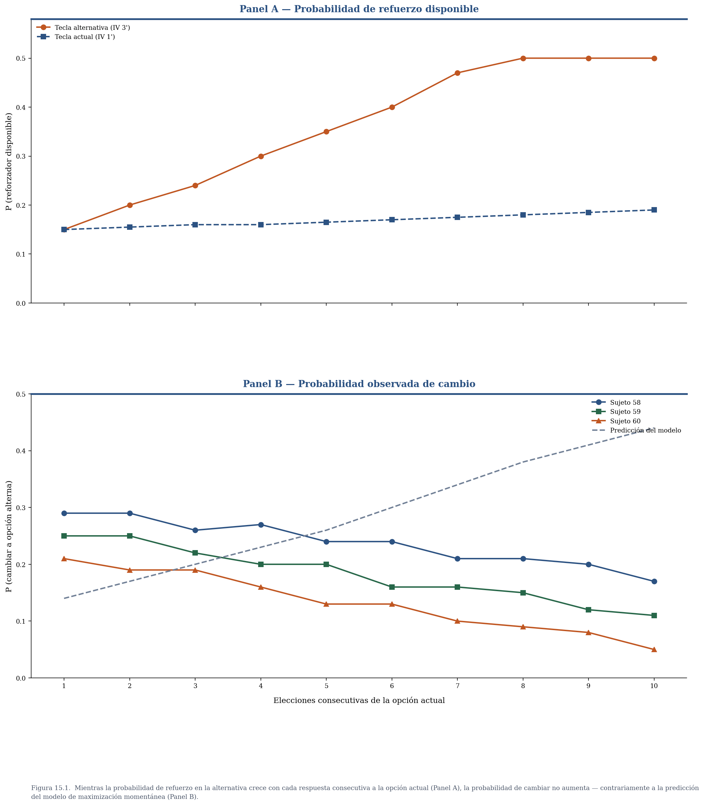
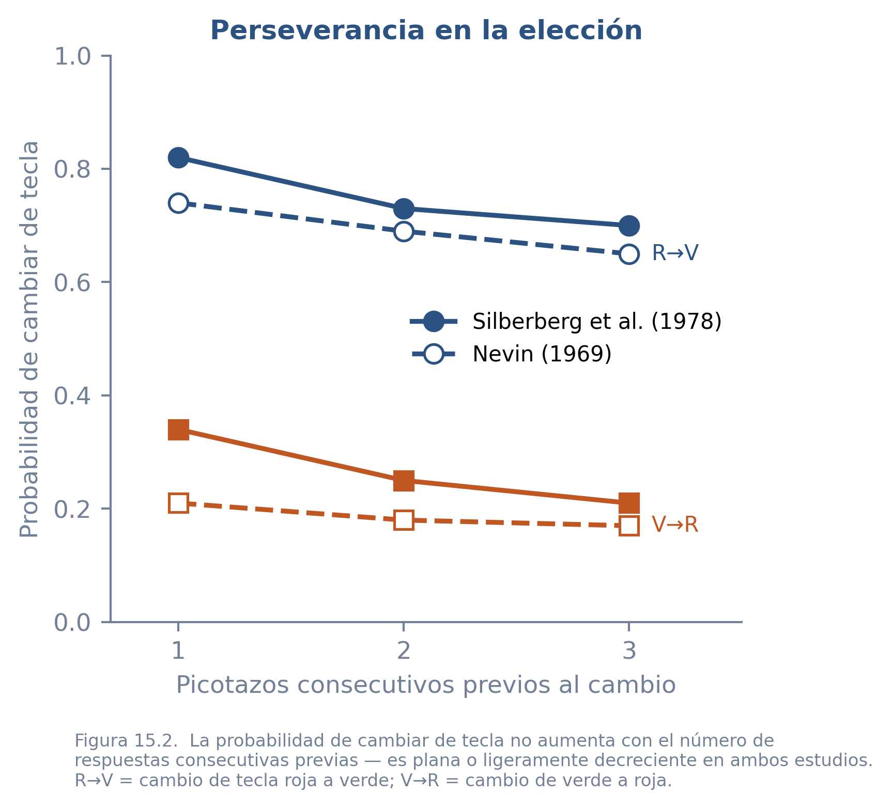
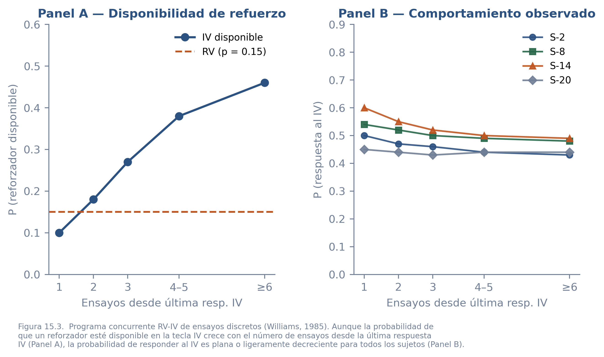
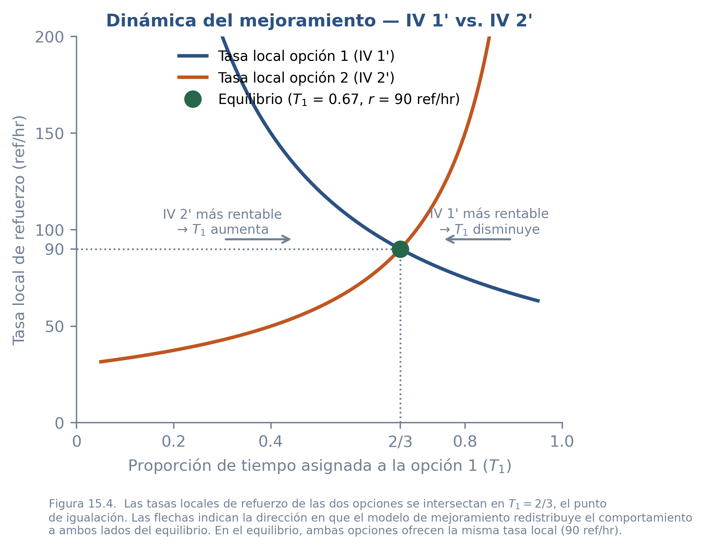

15 El Control Local del Comportamiento de Elección
El capítulo anterior documentó uno de los fenómenos más replicados de la psicología experimental: en equilibrio, los organismos distribuyen sus respuestas entre dos opciones de modo que la proporción de respuestas a cada alternativa iguala a la proporción de reforzadores que obtienen de ella. Mostró que la igualación puede describirse como un equilibrio entre rentabilidades locales o como el resultado compatible con ciertos criterios de maximización global. Pero esas descripciones, por sí solas, no especifican el proceso que lleva al organismo hasta ese equilibrio.
Consideremos una situación cotidiana. Una persona trabaja frente a su computadora con dos fuentes de mensajes abiertas: el correo electrónico y la mensajería instantánea. Ambas llegan de manera intermitente e impredecible. La persona debe decidir, en cada momento, a cuál de las dos prestar atención. Mientras revisa los mensajes instantáneos, los correos esperan sin ser leídos; mientras atiende el correo, los mensajes instantáneos se acumulan en la bandeja. Ninguna de las dos fuentes entrega mensajes en el instante preciso en que se la revisa: hay que esperar a que lleguen. Cuanto más tiempo transcurre sin revisar un canal, más probable es encontrar algo nuevo al volver. En ningún caso la atención continua a una sola fuente es sostenible: eventualmente la probabilidad de encontrar algo en el canal ignorado se vuelve suficientemente alta para atraer la atención de vuelta.
¿Qué regla sigue esta persona para decidir cuándo cambiar de una fuente a otra? Una posibilidad es que cambie cuando la probabilidad de encontrar un mensaje nuevo en la opción alternativa supera a la probabilidad de que haya uno en la opción actual — es decir, que en cada instante vaya a donde la probabilidad de encontrar algo es mayor. Otra posibilidad es que estime, sobre los últimos minutos de experiencia, la tasa a la que llegan mensajes de cada fuente, y redistribuya su atención para igualar esas tasas locales. Las dos reglas producen el mismo resultado agregado — en equilibrio, el tiempo dedicado a cada fuente refleja la frecuencia relativa de mensajes de cada una — pero lo hacen mediante mecanismos diferentes y generan predicciones distintas sobre el patrón momento a momento de cambios de atención.
Esta es exactamente la pregunta de este capítulo. Sabemos qué distribuye el organismo en equilibrio; la pregunta es qué proceso momento a momento genera esa distribución. En este capítulo usaremos una distinción que ya estuvo implícita en los capítulos sobre ascenso de colina y sistemas de retroalimentación, y que el capítulo sobre la ley del efecto relativo desarrollará con más detalle: la diferencia entre la variable de decisión y la regla de respuesta de un modelo. En la kinesis bacteriana, por ejemplo, la variable de decisión es la diferencia entre el nivel de glucosa actual y el del instante anterior; la regla de respuesta es el paso de dar maromas a nado recto cuando esa diferencia es positiva. Los dos términos nombran cosas que cualquier modelo de elección debe especificar: qué compara el organismo y qué hace con el resultado de esa comparación. Los dos modelos que examinaremos pueden producir patrones agregados semejantes, pero proponen variables de decisión distintas — y esa diferencia es lo que el experimento puede detectar. La maximización momentánea supone que el organismo compara probabilidades instantáneas de refuerzo; el mejoramiento supone que compara tasas locales de refuerzo. En ambos caso, la regla de elección es simple y local: escoger la opción con la mayor probabilidad instantánea de refuerzo, o moverse en la dirección que reduzca la diferencia en las tasas locales de refuerzo, ambas, una forma de optimización. La diferencia en la variable de decisión, será crucial para evaluar qué tipo de proceso puede generar la igualación global observada.
15.1 Maximización Momentánea
El modelo de maximización momentánea, propuesto formalmente por Shimp en 1969, parte de una observación sobre la estructura de los programas de intervalo variable. En un programa concurrente IV-IV, la probabilidad de que una respuesta a cualquiera de las dos opciones sea reforzada no es constante: depende de cuánto tiempo ha transcurrido desde la última respuesta a cada opción. En un programa de intervalo variable, el intervalo programado transcurre independientemente de lo que el organismo esté haciendo. Una vez que ese intervalo se completa, el reforzador queda disponible — armado, esperando a ser recolectado — hasta que el organismo responda. La probabilidad de encontrar el reforzador disponible al llegar a una opción crece con el tiempo transcurrido desde la última visita: si el organismo lleva mucho tiempo sin responder a una de las alternativas, es probable que el intervalo de ese programa ya se haya completado y el reforzador esté esperando.
Shimp argumentó que los organismos siguen esta lógica de manera precisa. Su propuesta es que en cada oportunidad de respuesta el organismo computa las probabilidades de refuerzo asociadas con cada opción en ese momento específico, y responde a la alternativa cuya probabilidad es más alta. En los términos de la distinción anterior: la variable de decisión es \(p_i\), la probabilidad instantánea de que el reforzador esté disponible en la opción \(i\); la regla de respuesta es elegir la alternativa con \(p_i\) más alta. La igualación global sería entonces un resultado emergente de esta regla local: si el organismo siempre va hacia donde la probabilidad de refuerzo es máxima, la distribución de su tiempo entre las opciones refleja, en promedio, la proporción relativa de reforzadores que cada una proporciona. Shimp verificó este resultado mediante simulación: el algoritmo de maximización momentánea produce igualación a nivel agregado.
La pregunta empírica es si los organismos reales siguen este algoritmo.
15.1.1 Evaluación experimental: programas de ensayos discretos IV-IV
Para estudiar la predicción del modelo, los programas concurrentes de ensayos discretos resultan especialmente apropiados porque permiten operacionalizar con precisión las secuencias de elección. El procedimiento es el siguiente: se presenta al organismo una oportunidad de respuesta breve durante la cual puede elegir una de las dos alternativas con una sola respuesta. Después de la respuesta, un intervalo entre ensayos pone fin a la oportunidad de elección. Al finalizar ese intervalo, se presenta una nueva oportunidad. Lo crítico para interpretar los resultados es que los programas de intervalo siguen corriendo durante el intervalo entre ensayos: cuando el intervalo programado de una opción se completa, el reforzador queda disponible hasta que el organismo responda. Cada elección adicional a la misma tecla incrementa el tiempo de ausencia de la alternativa y, por tanto, la probabilidad de que su reforzador esté disponible al llegar.
La predicción del modelo es perfectamente operacionalizable: la probabilidad de que el organismo cambie de opción debe aumentar con el número de elecciones consecutivas de una misma alternativa, siguiendo exactamente el ritmo al que crece la probabilidad de refuerzo en la opción no elegida.
En el experimento más influyente con este protocolo, Nevin (1969) empleó un programa concurrente IV-IV con palomas y midió la secuencia de elecciones durante sesiones extensas. Los resultados produjeron dos hallazgos que conviene mantener separados porque responden preguntas distintas.
El primer hallazgo concierne directamente a la predicción del modelo. En las secuencias posteriores al reforzamiento, la probabilidad de cambiar hacia la alternativa opuesta no aumentó como requería la maximización momentánea; por el contrario, tendió a disminuir. Así, aunque la estructura del programa hacía más probable que el reforzador alternativo estuviera disponible conforme pasaban más ensayos sin visitarlo, la conducta no siguió esa función creciente. Este resultado es contrario a la predicción central del modelo.

El segundo hallazgo emerge de un reanálisis que Nevin (1979) realizó sobre sus datos originales junto con los de un experimento de Silberberg et al. (1978). Al examinar la probabilidad de cambiar de opción en términos de la historia de respuestas del propio organismo, ambos experimentos mostraron el mismo patrón: la probabilidad de repetir una elección era alta e independiente de si esa respuesta había sido reforzada en el ensayo anterior. Los organismos tendían a permanecer en la opción que habían elegido, no a cambiar según el cálculo de probabilidades instantáneas. Este efecto de perseverancia no estaba previsto por el modelo y sugiere que el control local del comportamiento incorpora una inercia que la maximización momentánea ignora.

15.1.2 Evaluación experimental: programas de ensayos discretos RV-IV
En términos probabilísticos, un programa concurrente RV-IV de ensayos discretos ofrece una prueba especialmente contundente del modelo porque la asimetría entre los dos programas hace la predicción todavía más específica. En el programa de razón variable, la probabilidad de refuerzo por respuesta es constante — digamos \(p_r = 1/n\) — independientemente del tiempo transcurrido o de la historia reciente. En el programa de intervalo variable, la probabilidad de encontrar el reforzador disponible al llegar crece con el tiempo de ausencia: es baja justo después de una visita y se aproxima a 1 conforme transcurren más intervalos sin que el organismo regrese.
La predicción del modelo es entonces directa: el organismo debería responder al RV cuando la probabilidad de refuerzo del IV es baja — es decir, inmediatamente después de una visita al IV — y debería cambiar al IV cuando la probabilidad de que su reforzador esté disponible supera a \(p_r\). Esto implica una función monótonamente creciente: la probabilidad de responder al IV debe aumentar con el número de ensayos transcurridos desde la última respuesta al IV, siguiendo el ritmo al que crece la probabilidad de que ese reforzador esté esperando.
Williams (1985) puso a prueba esta predicción con palomas en programas concurrentes RV-IV con distintas combinaciones de valores. Los resultados fueron inequívocos en dos sentidos. Primero, la distribución molar de la conducta fue descrita razonablemente bien por la ley generalizada de igualación, aunque con subigualación moderada. Es decir, el resultado agregado preserva la regularidad de igualación en sentido amplio, pero no como igualdad exacta. Segundo, y esto es lo crítico, la probabilidad de responder al IV no creció como función del número de ensayos desde la última respuesta IV, a pesar de que la probabilidad de encontrar ese reforzador disponible sí crecía de manera ordenada. La función observada era plana o ligeramente decreciente — opuesta en su forma a la predicción del modelo.

15.1.3 Conclusiones sobre el modelo de maximización momentánea
Los experimentos con programas de ensayos discretos — tanto IV-IV como RV-IV — convergen en un diagnóstico claro: la maximización momentánea no describe el proceso que genera igualación. Los organismos no computan la probabilidad de refuerzo en el instante presente y responden en consecuencia. Tres regularidades destacan en su lugar. La primera es que la ocurrencia de un reforzador sí aumenta la probabilidad de repetir la misma respuesta — efecto consistente con la ley del efecto y con los modelos de aprendizaje que ya conocemos. La segunda es la perseverancia: los organismos repiten una elección con mayor probabilidad por el simple hecho de haberla emitido recientemente, independientemente de si fue reforzada. La tercera es que la sensibilidad a la secuencia de ensayos puede verse afectada por el intervalo entre elecciones y por otros factores que influyen en la memoria sobre las respuestas recientes.
La implicación más importante, sin embargo, es conceptual: igualación puede ocurrir sin que el organismo esté maximizando la probabilidad de refuerzo en cada elección individual. El patrón global emerge sin que el mecanismo local lo apunte directamente. Esto deja abierta la pregunta de qué sí hace el organismo en cada momento — y esa es exactamente la pregunta que el modelo siguiente intenta responder.
15.2 Modelo de Mejoramiento
El modelo de mejoramiento (melioration) fue propuesto por Herrnstein y Vaughan (1980) como una descripción del proceso momento a momento que produce igualación en programas concurrentes. El mejoramiento conserva la idea de una regla local, pero cambia la variable de decisión: el organismo ya no responde a la probabilidad instantánea de que un reforzador esté disponible, sino a la tasa local de refuerzo de cada alternativa — lo que en el capítulo anterior llamamos rentabilidad de las opciones. La tasa local de refuerzo de una opción es el cociente entre el número de reforzadores obtenidos en esa opción y el tiempo que el organismo le dedica:
\[\frac{r_i}{T_i}\]
A diferencia de la tasa global — que divide el número total de reforzadores entre el tiempo total de la sesión — la tasa local divide entre el tiempo asignado específicamente a esa opción. Esta distinción es fundamental: el tiempo que el organismo pasa en la opción 1 no contribuye al denominador de la tasa local de la opción 2, y viceversa.
La regla de respuesta del modelo de mejoramiento es una variante del algoritmo de ascenso de colina que encontramos en capítulos anteriores: en cada momento, el organismo se mueve hacia la opción cuya tasa de refuerzo local es más alta, exactamente como el organismo en kinesis se mueve hacia el estado con menor error o el sistema de retroalimentación del capítulo 5 se ajusta para reducir la discrepancia respecto al valor de referencia. La novedad es que aquí la variable comparada no es una magnitud física externa sino una tasa de reforzamiento que el propio comportamiento del organismo contribuye a determinar. Al aumentar el tiempo asignado a la opción más rentable, el denominador de su tasa local crece — su rentabilidad disminuye. Simultáneamente, el tiempo asignado a la opción alternativa decrece, reduciendo el denominador de su tasa local — su rentabilidad aumenta. El sistema se auto-corrige hasta que las dos tasas locales son iguales, punto en el que el organismo ya no tiene incentivo para redistribuir su tiempo.
15.2.1 El ejemplo numérico
Consideremos un programa concurrente IV 1 min – IV 2 min en una sesión de una hora. Para entender el supuesto clave del modelo, conviene partir de lo que ocurre en cada visita.
En un programa de intervalo variable, el reloj del intervalo corre continuamente, incluso mientras el organismo atiende la otra opción. Cuando el intervalo programado se completa, el reforzador queda disponible — armado en esa tecla — y su probabilidad de ser recolectado en la siguiente visita es entonces cercana a 1, siempre que el organismo responda a una tasa suficientemente alta al llegar. Por tanto, el número de reforzadores que el organismo puede obtener de una opción durante la sesión depende esencialmente del ritmo al que el programa completa sus intervalos — no de cuánto tiempo el organismo dedica activamente a esa opción. Para el IV 1’, el programa completa en promedio 60 intervalos por hora; para el IV 2’, completa 30. Si el organismo visita cada opción con suficiente frecuencia para recolectar los reforzadores disponibles en cada visita, puede obtener, durante una sesión, esos 60 y 30 reforzadores independientemente de cómo distribuya su tiempo entre las dos teclas. Sin embargo, la tasa local no es “reforzadores por hora de sesión”, sino reforzadores por hora de tiempo dedicado a esa alternativa. Si una opción produce 30 reforzadores durante una sesión, pero el organismo solo le dedica 0.1 horas de atención efectiva, su tasa local es 300 reforzadores por hora de tiempo dedicado, aunque la tasa programada por hora de sesión siga siendo 30.
Con este supuesto, y usando \(T_1\) y \(T_2\) para las proporciones de tiempo asignadas a cada opción (\(T_1 + T_2 = 1\)), las tasas locales se calculan dividiendo los reforzadores obtenibles en una sesión, entre el tiempo dedicado a cada opción. Si al inicio de la sesión el organismo asigna la mitad de su tiempo a cada alternativa, las tasas locales serían:
\[\frac{60}{0.5\text{ hr}} = 120 \text{ ref/hr} \qquad \text{(IV 1')}\] \[\frac{30}{0.5\text{ hr}} = 60 \text{ ref/hr} \qquad \text{(IV 2')}\]
La opción IV 1’ es más rentable. El modelo predice que el organismo asignará más tiempo a esa alternativa. Supongamos que lleva esa asignación al 90% de su tiempo:
\[\frac{60}{0.9\text{ hr}} = 66.7 \text{ ref/hr} \qquad \text{(IV 1')}\] \[\frac{30}{0.1\text{ hr}} = 300 \text{ ref/hr} \qquad \text{(IV 2')}\]
Al dedicar tanto tiempo al IV 1’, su tasa local colapsó a 66.7; mientras tanto, el IV 2’, que recibió solo el 10% del tiempo, tiene ahora una tasa local de 300 ref/hr — cinco veces mayor. El organismo reasignará tiempo al IV 2’. El sistema oscila alrededor del punto donde las dos tasas locales son iguales.
Para encontrar ese punto de equilibrio formalmente, la condición es que las tasas locales sean idénticas:
\[\frac{r_1}{T_1} = \frac{r_2}{T_2}\]
Reorganizando:
\[\frac{T_1}{T_2} = \frac{r_1}{r_2}\]
Esta es exactamente la ley de igualación: el organismo no necesita conocer la ley de igualación ni computar proporciones relativas. Basta con que siga la regla local de moverse hacia la opción más rentable en cada momento; la igualación global es el estado de equilibrio de ese proceso de retroalimentación.
Para el ejemplo numérico, el equilibrio se alcanza cuando \(T_1/T_2 = 60/30 = 2\), es decir, cuando el organismo dedica dos tercios de su tiempo al IV 1’ y un tercio al IV 2’:
\[\frac{60}{2/3} = 90 \text{ ref/hr} = \frac{30}{1/3} \quad\]
En ese punto, ambas opciones ofrecen exactamente la misma tasa local de 90 ref/hr, y la distribución de tiempo cumple:
\[\frac{2/3}{2/3 + 1/3} = \frac{60}{60 + 30} = \frac{2}{3}\]
15.2.2 Formalización matemática del mejoramiento
El ejemplo numérico mostró que el sistema converge al punto de igualación, pero se limitó a dos casos concretos. Para entender por qué el sistema converge desde cualquier punto de partida necesitamos generalizar ese argumento — y al hacerlo se vuelve visible la conexión con el ascenso de colina del capítulo 4 y con los sistemas de retroalimentación negativa del capítulo 5.
15.2.2.1 Variable de decisión y regla de respuesta
Escribamos la tasa de refuerzo local de cada opción como:
\[\rho_i = \frac{r_i}{T_i}\]
donde \(r_i\) es el número de reforzadores obtenibles en la sesión y \(T_i\) es la proporción de tiempo dedicada a esa opción. La variable que gobierna la decisión en el modelo de mejoramiento es la discrepancia entre las dos tasas locales:
\[\Delta = \rho_1 - \rho_2 = \frac{r_1}{T_1} - \frac{r_2}{1 - T_1}\]
(donde hemos escrito \(T_2 = 1 - T_1\), dado que las dos proporciones suman uno). Esta es la señal de error del sistema: cuando \(\Delta > 0\), la opción 1 es más rentable; cuando \(\Delta < 0\), lo es la opción 2; cuando \(\Delta = 0\), las tasas son iguales y el organismo no tiene incentivo para redistribuir su tiempo. La regla de mejoramiento dice que el organismo se mueve en la dirección de \(\Delta\): aumenta \(T_1\) cuando \(\Delta > 0\), lo disminuye cuando \(\Delta < 0\). Una forma simple de escribir en tiempo discreto esta regla es:
\[T_1(n+1) = T_1(n) + \alpha \cdot \Delta(n)\]
donde \(\alpha > 0\) es un parámetro que determina la velocidad de ajuste. Dicho en los términos de la distinción que abrió el capítulo: \(\Delta\) es la variable de decisión — la cantidad que el organismo compara en cada momento; la ecuación de actualización es la regla de respuesta — el procedimiento que convierte esa comparación en un ajuste de conducta. Esta ecuación debe resultar familiar por su arquitectura: es la misma que la regla de actualización de Bush y Mosteller del capítulo 8 y la de Rescorla-Wagner del capítulo 11. En todos los casos, el estado actual se actualiza sumando una discrepancia entre dos variables multiplicada por un parámetro de velocidad, que puede también interpretarse como el peso que el organismo le asigna a la discrepancia. La diferencia es que aquí el error no es la diferencia entre un resultado observado y uno predicho, sino la diferencia entre dos tasas de refuerzo local. La arquitectura del comparador es la misma; cambia la naturaleza de las variables que compara.
15.2.2.2 Por qué el sistema siempre converge
La pregunta central es si el proceso descrito por la ecuación de actualización converge al equilibrio desde cualquier punto de partida. Para responderla, hay que determinar qué le ocurre a la discrepancia \(\Delta\) cuando \(T_1\) se mueve en su dirección.
Consideremos el caso en que \(\Delta > 0\) — la opción 1 es más rentable — y el organismo, siguiendo la regla, dedica más tiempo a esa opción. Aumentar \(T_1\) produce dos efectos simultáneos que operan en la misma dirección:
Efecto sobre \(\rho_1\): Al aumentar \(T_1\), el denominador de \(r_1 / T_1\) crece, de modo que \(\rho_1\) disminuye. La opción que recibe más tiempo se vuelve menos rentable por visita.
Efecto sobre \(\rho_2\): Dado que \(T_1 + T_2 = 1\), al aumentar \(T_1\) se reduce \(T_2\). El denominador de \(r_2 / T_2\) se achica, de modo que \(\rho_2\) aumenta. La opción que recibe menos tiempo se vuelve más rentable por visita.
Ambos efectos empujan \(\Delta = \rho_1 - \rho_2\) hacia cero: el primer término cae, el segundo sube. El organismo que sigue la regla de mejoramiento activa automáticamente un mecanismo de corrección: al moverse hacia la opción más rentable, erosiona su propia ventaja y eleva la rentabilidad de la opción que está dejando. El sistema se regula a sí mismo.
Este argumento es simétrico: en el caso en que \(\Delta < 0\), el organismo aumenta \(T_2\), lo que reduce \(\rho_2\) y eleva \(\rho_1\), volviendo a empujar \(\Delta\) hacia cero. En cualquier dirección que se encuentre el desequilibrio, el movimiento lo corrige.
Esto es retroalimentación negativa en su forma más pura: la variable de control (decisión) \(\Delta\) cambia de signo cada vez que el organismo se aproxima demasiado a un extremo, corrigiendo el exceso. El equilibrio es el único punto donde la señal de error desaparece.
15.2.2.3 Un único punto de equilibrio
¿Cuántos puntos de equilibrio tiene este sistema? La respuesta emerge de observar cómo se comportan \(\rho_1\) y \(\rho_2\) como funciones de \(T_1\).
Conforme \(T_1\) crece de 0 a 1, la tasa local \(\rho_1 = r_1 / T_1\) decrece sin parar: empieza en valores muy altos (cuando \(T_1\) es casi cero) y llega a \(r_1\) (cuando \(T_1 = 1\)). La tasa local \(\rho_2 = r_2 / (1 - T_1)\) hace exactamente lo contrario: empieza en \(r_2\) (cuando \(T_1\) es casi cero) y crece sin límite conforme \(T_1\) se acerca a 1. Una función estrictamente decreciente y una estrictamente creciente se cruzan exactamente una vez. Ese cruce es el único equilibrio del sistema.
En ese cruce, \(\rho_1 = \rho_2\), es decir:
\[\frac{r_1}{T_1^*} = \frac{r_2}{T_2^*}\]
Reorganizando:
\[\frac{T_1^*}{T_2^*} = \frac{r_1}{r_2}\]
Que es la ley de igualación. El único punto donde el sistema deja de moverse es, por construcción aritmética, el punto de igualación.
15.2.2.4 Iteración numérica
La tabla siguiente muestra el proceso de convergencia para el ejemplo IV 1’ – IV 2’ de una hora, partiendo de \(T_1 = 0.5\) y usando un paso \(\alpha = 0.002\):
| \(n\) | \(T_1\) | \(\rho_1 = r_1/T_1\) | \(\rho_2 = r_2/T_2\) | \(\Delta = \rho_1 - \rho_2\) |
|---|---|---|---|---|
| 0 | 0.500 | 120.0 | 60.0 | +60.0 |
| 1 | 0.620 | 96.8 | 79.0 | +17.8 |
| 2 | 0.656 | 91.5 | 87.1 | +4.4 |
| 3 | 0.664 | 90.3 | 89.4 | +0.9 |
| 4 | 0.666 | 90.1 | 89.9 | +0.2 |
| 5 | 0.667 | 90.0 | 90.0 | ≈ 0 |
Pueden observarse en la tabla los mismos dos fenómenos que describimos cualitativamente. Conforme \(T_1\) crece, \(\rho_1\) cae de 120 a 90 y \(\rho_2\) sube de 60 a 90: los dos efectos simultáneos que reducen \(\Delta\). Y \(\Delta\) decrece de 60 a casi cero en cinco pasos, cada uno más pequeño que el anterior, hasta que el sistema se detiene en el único punto donde no hay incentivo para seguir moviéndose. Como retroalimentación negativa: el sistema se ajusta en cada paso para corregir la discrepancia, y la corrección es proporcional al error.
Esta secuencia es idéntica, en su lógica, al ascenso de colina que describimos en el capítulo 4. Allí, la bacteria comparaba la concentración actual con la anterior y se movía en la dirección del gradiente; aquí, el organismo compara las tasas locales de dos opciones y se mueve hacia la más rentable. En ambos casos, el movimiento sigue la dirección de una señal de discrepancia, y esa señal disminuye con cada paso. La cima de la colina que el mejoramiento escala es el punto donde la discrepancia desaparece, y ese punto resulta ser algebraicamente idéntico al punto de igualación.
En el simulador de este capítulo pueden explorar estas dinámicas en tres módulos. El Simulador A muestra cómo evoluciona la proporción de respuestas a cada opción, ensayo a ensayo, bajo los dos modelos: el mejoramiento parte del punto de partida que configuren y converge gradualmente porque las tasas locales se van igualando a medida que se acumula experiencia; la maximización momentánea, al ser sensible a las probabilidades instantáneas, fluctúa alrededor del punto de igualación casi desde el inicio. Pueden comparar trayectorias desde puntos de partida simétricos (\(T_1 = 0.10\) versus \(T_1 = 0.90\)) y verificar que el sistema converge al mismo equilibrio desde cualquier origen. El Simulador B reproduce la prueba empírica central del capítulo: calcula, en las secuencias generadas por cada modelo, la probabilidad de cambiar de opción en función del número de respuestas consecutivas a la misma alternativa. La barra de predicción teórica de la maximización momentánea es creciente — exactamente lo que los datos de Nevin (1969) no muestran. El Simulador C recrea el protocolo de Williams (1985) con un programa concurrente RV-IV de ensayos discretos: el Panel A muestra cuándo la probabilidad de refuerzo en el IV supera a la del RV, y el Panel B muestra que el organismo no responde a esa transición aunque sea visible en los datos.

15.2.3 Evidencia empírica del proceso de mejoramiento
Que el modelo predice algebraicamente igualación es claro por construcción. La pregunta empírica es si los organismos siguen dinámicamente el proceso de mejoramiento — es decir, si redistribuyen su comportamiento en la dirección que reduce la diferencia entre tasas locales.
Vaughan (1981) diseñó un procedimiento que permitía que mejoramiento y maximización global produjeran predicciones diferentes. En una primera condición, las tres descripciones relevantes —mejoramiento, minimización de la desviación respecto a igualación y maximización global— predecían la misma región de asignación de tiempo. En una segunda condición, la función de retroalimentación fue modificada de modo que el mejoramiento predecía un desplazamiento sustancial hacia la derecha, aun cuando ese desplazamiento implicara una desviación transitoria de la igualación molar y una reducción de la tasa global de reforzamiento. Los tres sujetos terminaron desplazando su distribución de tiempo hacia la región predicha por el mejoramiento. El resultado es importante porque muestra que la dinámica de elección puede seguir la comparación de tasas locales incluso cuando esa dinámica no maximiza la tasa global de reforzamiento y proporciona la evidencia más directa de que el proceso momento a momento que gobierna la elección opera sobre tasas locales, no sobre promedios globales de sesión.
15.2.4 Una limitación importante
El modelo de mejoramiento deja sin especificar la ventana temporal sobre la que el organismo estima las tasas locales. ¿Las estima a lo largo de la sesión completa? ¿Sobre los últimos diez minutos? ¿Reinicia el cómputo después de cada reforzador? Esta indeterminación no es un detalle menor: la respuesta tiene consecuencias profundas cuando las condiciones del entorno cambian a lo largo del tiempo. En entornos donde la disponibilidad de reforzadores fluctúa — que es la norma en el mundo natural, no la excepción — el tamaño de la ventana temporal determina qué tan rápido puede el organismo adaptarse a los cambios. Un organismo que promedia sobre ventanas muy largas será lento para detectar cambios; uno que usa ventanas cortas será veloz pero susceptible al ruido. Este problema — la elección adaptativa de la escala temporal de estimación — es uno de los temas centrales del módulo de incertidumbre, más adelante en el libro.
15.3 Conclusión
Los dos modelos revisados en este capítulo comparten la premisa de que igualación es un fenómeno emergente — el resultado de un proceso, no su causa — y que ese proceso opera en una escala temporal mucho más fina que las sesiones completas sobre las que se calcula la igualación. Donde difieren es en la variable que gobierna la decisión local.
El modelo de maximización momentánea falla en su predicción más específica: los organismos no responden a la opción con mayor probabilidad instantánea de refuerzo. Lo que sí se observa — el efecto de perseverancia documentado por Nevin y Silberberg — no estaba previsto por el modelo y sugiere que el control local del comportamiento incorpora inercia, no solo sensibilidad probabilística. La maximización momentánea resulta demasiado reactiva al estado del entorno instante a instante.
El modelo de mejoramiento resuelve esto apelando a una escala temporal intermedia: el organismo estima la tasa de refuerzo sobre el tiempo que ha dedicado recientemente a cada opción, y redistribuye su comportamiento siguiendo el algoritmo de ascenso de colina — moviéndose hacia la opción con mayor tasa local. Este proceso de retroalimentación negativa converge exactamente al punto de igualación, y Vaughan (1981) mostró que esa redistribución dinámica ocurre en respuesta a tasas locales, no a promedios globales de sesión. La condición formal de equilibrio resulta algebraicamente idéntica a la ley de igualación, lo que convierte al mejoramiento en la explicación mecanística más completa del fenómeno que documentamos en el capítulo anterior.
La limitación principal del modelo no es empírica sino de especificación: no determina la ventana temporal sobre la que se estiman las tasas locales. En entornos estables esa omisión es tolerable; en entornos que cambian — la norma fuera del laboratorio — la elección de esa ventana determina qué tan rápido puede adaptarse el organismo, y ese problema requiere herramientas que desarrollaremos en módulos posteriores.
Volviendo al ejemplo con el que abrimos: la persona que alterna entre correos y mensajes instantáneos no computa probabilidades de llegada en cada instante ni maximiza globalmente sobre toda la jornada. Estima, de manera implícita, la tasa reciente de mensajes en cada canal — qué tan frecuentemente llegan mensajes de cada fuente — y redistribuye su atención hacia el canal que tiene mayor tasa cuando la diferencia entre las dos se vuelve suficientemente grande. Igualación emerge de esa regla simple, sin que la persona la conozca ni la aplique deliberadamente.
15.4 Resumen
La igualación global que documentamos en el capítulo anterior puede ser el resultado de mecanismos muy distintos que operen a nivel local. El modelo de maximización momentánea propone que el organismo elige en cada instante la opción con mayor probabilidad de refuerzo disponible; la evidencia de experimentos de ensayos discretos — tanto IV-IV como RV-IV — no apoya esta predicción. La probabilidad de cambiar de opción no crece con el número de ensayos consecutivos a la misma alternativa, aunque la probabilidad de encontrar el reforzador disponible en la alternativa sí lo haga. El efecto de perseverancia observado en ambos protocolos indica que el comportamiento de elección incorpora inercia que el modelo no contempla. El modelo de mejoramiento propone que el organismo estima las tasas de refuerzo locales de cada opción — computadas sobre la base de la probabilidad de encontrar el reforzador disponible en cada visita — y se mueve hacia la que tiene mayor tasa local. Este proceso de retroalimentación negativa converge al punto de igualación como su equilibrio natural, y la condición formal de ese equilibrio es algebraicamente idéntica a la ley de igualación. Vaughan (1981) aportó evidencia directa de que la redistribución dinámica del comportamiento responde a tasas locales, no a promedios de sesión.
15.5 Conexiones
15.5.1 Hacia atrás
Sistemas de retroalimentación (capítulo 5). El modelo de mejoramiento es un sistema de retroalimentación negativa en el sentido más preciso del capítulo 5: el organismo mide la discrepancia entre las tasas locales de las dos opciones y se mueve para reducirla. El punto de equilibrio — donde la discrepancia es cero y el organismo deja de redistribuir su comportamiento — corresponde exactamente al punto de igualación. La novedad respecto al capítulo 5 es que la variable comparada no es una magnitud física sino una tasa de reforzamiento que el propio comportamiento del organismo contribuye a determinar, convirtiendo al sistema en un lazo de retroalimentación donde la salida del organismo altera la señal de entrada del comparador.
Kinesis y ascenso de colina (capítulos 4–5). La regla de respuesta del mejoramiento — moverse hacia la opción con mayor tasa local — es una instancia del mismo algoritmo de ascenso de colina que aparece en la kinesis bacteriana y en los sistemas de retroalimentación. La diferencia es que la variable sobre la que opera el ascenso de colina no es una propiedad del entorno físico sino una tasa de reforzamiento que el organismo computa a partir de su propia historia de visitas. El mismo principio algorítmico reaparece en un nuevo dominio.
Igualación en programas concurrentes (capítulo 14). Los dos modelos de este capítulo buscan explicar el mismo fenómeno que documentamos en el capítulo anterior, pero desde la escala temporal del proceso que lo genera. La contribución central de los experimentos de ensayos discretos es demostrar que el equilibrio molar puede coexistir con mecanismos moleculares que no lo apuntan directamente: igualación emerge sin que el organismo la calcule.
Programas de refuerzo (capítulo 13). La razón por la que el mejoramiento funciona donde la maximización momentánea falla tiene que ver con la estructura temporal de los programas de intervalo variable: el intervalo transcurre independientemente de lo que el organismo esté haciendo, y el reforzador queda disponible hasta ser recolectado. Esta propiedad — que hace que la probabilidad de encontrar el reforzador disponible crezca con el tiempo de ausencia — es la que da al mejoramiento su dinámica característica y la que hace inteligible el ejemplo numérico del equilibrio.
15.5.2 Hacia adelante
Maximización global: Staddon y Rachlin (capítulo siguiente). El mejoramiento predice igualación como equilibrio de un proceso que opera sobre tasas locales. Los modelos de maximización global proponen una perspectiva distinta: los organismos distribuyen su comportamiento de modo que maximizan alguna cantidad definida sobre la sesión completa. En entornos estables, las dos familias de modelos hacen predicciones similares. La diferencia crítica aparece cuando el entorno cambia durante la sesión: el mejoramiento predice redistribución en cuanto las tasas locales se modifican, mientras que la maximización global requiere integrar sobre períodos más largos. Determinar qué familia se aproxima mejor a los datos bajo distintas condiciones de cambio es el problema central del capítulo siguiente.
La ley del efecto relativa (capítulo posterior). El modelo de mejoramiento describe cómo el organismo redistribuye su comportamiento entre opciones, pero no especifica cómo se determina el valor de cada opción a partir de su historia de reforzamiento. La ley del efecto relativa de Herrnstein completa ese cuadro: propone que el valor de una respuesta depende de su tasa de reforzamiento en relación al reforzamiento total disponible en el contexto. Esa dependencia contextual del valor, que el mejoramiento asume implícitamente, es la pieza que conecta los modelos moleculares de elección con los modelos de aprendizaje de valor de los bloques anteriores del libro.
Tasas de refuerzo como representación primaria: Gallistel (módulo posterior). La relevancia de las tasas de refuerzo, en lugar de las probabilidades, en el modelo de mejoramiento, es enfatizada por Gallistel. Las tasas de refuerzo no constituyen un cálculo derivado de probabilidades individuales, sino que representan la forma primaria en que los organismos forman y actualizan sus representaciones. Estas tasas son fundamentales tanto para la adquisición del conocimiento como para la asignación de respuestas. Su estudio constituirá uno de los temas centrales del debate en dicho módulo.
Incertidumbre y volatilidad ambiental (módulo posterior). La limitación más seria del mejoramiento — la indeterminación de la ventana temporal para estimar tasas locales — se convierte en el problema central cuando el entorno cambia. La investigación contemporánea con protocolos de entornos volátiles estudia cómo los organismos ajustan esa escala temporal en función de la incertidumbre sobre el estado actual del entorno. En esos contextos, la exploración de opciones cuyo valor es incierto reemplaza al mejoramiento como principio explicativo.
15.6 Ejercicios
1. Un programa concurrente IV 1’ – IV 4’ opera durante una sesión de una hora. Asumiendo que el organismo visita cada opción con suficiente frecuencia para recolectar los reforzadores disponibles en cada visita, calcula las tasas locales de refuerzo si el organismo asigna el 50%, el 80% y el 20% de su tiempo a la opción IV 1’. ¿En cuál de los tres casos las tasas locales son iguales? Verifica que ese punto coincide con la predicción de igualación.
2. El modelo de maximización momentánea y el modelo de mejoramiento producen ambos igualación en equilibrio, pero mediante procesos diferentes. Explica qué observación empírica permite distinguirlos experimentalmente. ¿Qué patrón de resultados esperarías de cada modelo en un experimento de ensayos discretos que mida la probabilidad de cambiar de opción como función del número de respuestas consecutivas a la opción actual?
3. En el experimento de Nevin (1969), los animales mostraron perseverancia: la probabilidad de repetir la elección anterior era alta independientemente de si esa elección había sido reforzada. ¿Qué implicaciones tiene este resultado para la ley del efecto? ¿Es compatible con el modelo de Bush y Mosteller que estudiamos en el capítulo 8? Explica tu razonamiento.
4. El modelo de mejoramiento predice que el sistema converge al punto de igualación desde cualquier punto de partida. Usa el ejemplo numérico del capítulo (IV 1’ – IV 2’, sesión de una hora) y calcula las tasas locales si el organismo comienza asignando el 10% de su tiempo al IV 1’. ¿En qué dirección se moverá el sistema? ¿Hacia dónde se movería si comenzara con el 90%? ¿En qué dirección se moverá el sistema? ¿Por qué no podemos determinar el número exacto de pasos sin especificar la velocidad de ajuste del modelo?
5. El modelo de mejoramiento deja sin especificar la ventana temporal sobre la que el organismo estima las tasas locales de refuerzo. Describe dos contextos naturales — uno donde una ventana corta sería adaptativa y uno donde una ventana larga lo sería — y explica por qué en cada caso. ¿Qué propiedad del entorno determinaría cuál ventana es más apropiada?
6. (Reflexión) Este capítulo mostró que igualación puede producirse sin que el organismo tenga representación del patrón global que está produciendo. ¿Cómo se relaciona esto con la distinción entre el nivel computacional y el nivel algorítmico de explicación que introdujimos al inicio del libro? ¿Qué dice sobre la relación entre las metas funcionales de un sistema y los mecanismos que las implementan?
15.7 Lecturas Recomendadas
Shimp, C. P. (1966). Probabilistically reinforced choice behavior in pigeons. Journal of the Experimental Analysis of Behavior, 9, 443–455. — La demostración empírica original de que los organismos son sensibles a la estructura probabilística de los programas de intervalo variable. El punto de partida de la pregunta que este capítulo examina.
Shimp, C. P. (1969). Optimal behavior in free-operant experiments. Psychological Review, 76, 97–112. — La formulación formal del modelo de maximización momentánea y la derivación de igualación por simulación. La sección de simulación es inusualmente clara para la época.
Nevin, J. A. (1969). Interval reinforcement of choice behavior in discrete trials. Journal of the Experimental Analysis of Behavior, 12, 875–885. — El experimento de ensayos discretos IV-IV que puso a prueba y refutó la maximización momentánea. La figura de los dos paneles — probabilidad de refuerzo creciente versus probabilidad de cambio plana — es uno de los resultados más limpios del área.
Nevin, J. A. (1979). Reinforcement schedules and response strength. Journal of the Experimental Analysis of Behavior, 31, 267–275. — Incluye el reanálisis de los datos originales de Nevin junto con los de Silberberg et al. (1978), documentando el efecto de perseverancia con mayor solidez que cualquiera de los dos estudios por separado. (Verificar año y datos bibliográficos completos.)
Silberberg, A., Hamilton, B., Ziriax, J. M., & Casey, J. (1978). The structure of choice. Journal of Experimental Psychology: Animal Behavior Processes, 4, 368–398. — El reanálisis de los datos de Nevin y nuevos datos propios que documentan el efecto de perseverancia. La combinación de dos conjuntos de datos con diseños ligeramente distintos fortalece la conclusión sobre igualación sin maximización momentánea.
Williams, B. A. (1985). Choice behavior in a discrete-trial concurrent schedule: A test of maximizing theories. Learning and Motivation, 16, 423–443. — El experimento RV-IV de ensayos discretos. Diseño especialmente limpio porque la asimetría entre los dos programas hace la predicción del modelo perfectamente específica en términos probabilísticos.
Herrnstein, R. J., & Vaughan, W. (1980). Melioration and behavioral allocation. En J. E. R. Staddon (Ed.), Limits to Action: The Allocation of Individual Behavior (pp. 143–176). Academic Press. — La propuesta original del mejoramiento. El capítulo incluye la derivación formal del equilibrio y varios experimentos de evaluación. Herrnstein escribe con una claridad inhabitual para escritura técnica.
Vaughan, W. (1981). Melioration, matching, and maximization. Journal of the Experimental Analysis of Behavior, 36, 141–149. — El experimento clave que proporciona evidencia empírica directa del proceso de mejoramiento: cuando los valores de los programas cambian en medio de la sesión, los organismos redistribuyen su comportamiento según las tasas locales, no según la maximización global de la sesión.
Staddon, J. E. R. (2001). Adaptive Dynamics: The Theoretical Analysis of Behavior. MIT Press. — Los capítulos sobre elección presentan el mejoramiento como un caso especial de dinámica adaptativa en lazo cerrado, con análisis de estabilidad y extensiones a entornos cambiantes.